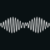

@cadu116
home.
Músicas para cantar no carro enquanto vou trabalhar.
13 músicas
46 min
NOME DA MÚSICA
ÁLBUM
TEMPO


This Love (Taylor’s Version)
Taylor Swift
This Love (Taylor’s Version)
4:10

Radioactive
Imagine Dragons
Night Visions
3:06

ACORDA PEDRINHO
Jovem Dionísio
Acorda, Pedrinho
2:53



R U Mine?
Artic Monkeys
AM
3:21
Fever
Ray Charles, Natalie Cole
Genius Loves Company
3:30
My Love, My Life
ABBA
Arrival
3:51
Stand by Me
Ben E. King
Stand by Me
2:54
Mirror
Kendrick Lamar
Mr. Morale & The Big Steppers
4:16

Arcade
Duncan Laurence
Arcade
3:03

My Life
Imagine Dragons
Mercury - Act 1
3:44

Blank Space
Taylor Swift
1989
3:51
If I Ain’t Got You
Alicia Keys
Diary of Alicia Keys
3:48